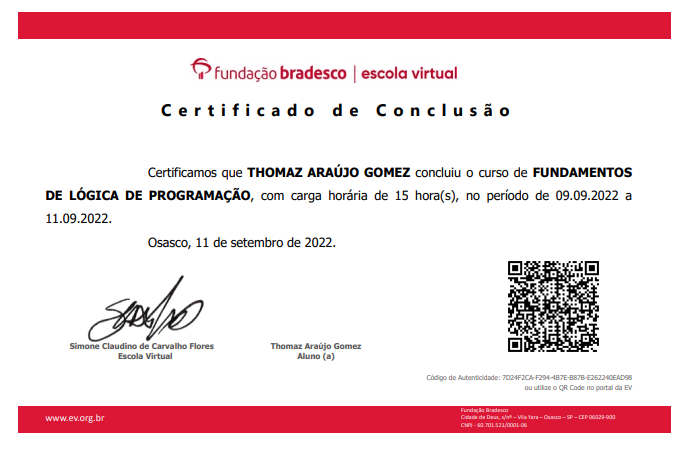
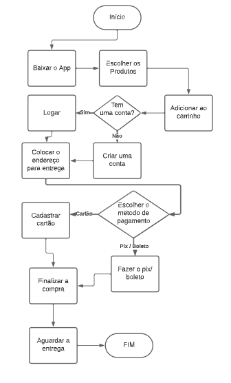
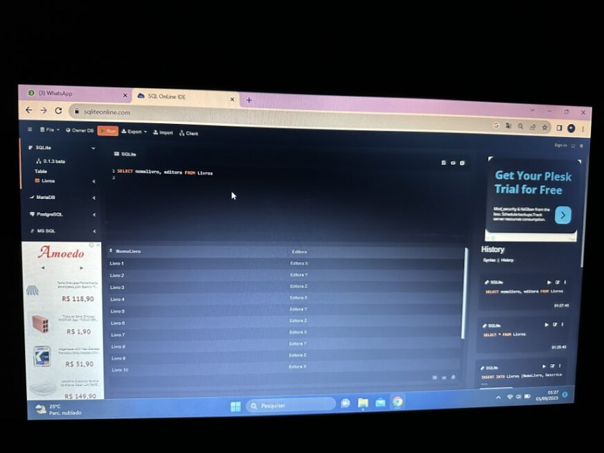

Em t.i, as atividades que eu mais gostei foram as seguintes:
1- Cursos Fundação Bradesco

Eu gostei bastante de realizar esses cursos do bradesco pois eles emitem os diplomas que podem ser utilizados em nossos currículos, acarretando um "crédito" a mais para nós na hora de arrumar um emprego.
2- Diagrama: Aplicativo de vendas

Essa tarefa foi um pouco complicada de fazer, eu gostei dela pois nós usamos mais a nossa lógica do que outra coisa. Considerando que a lógica é uma das coisas mais importantes na programação, essa atividade foi muito boa.
3- MYSQL

Por último, o SQL. Foi uma lingugem que eu gostei de programar, ela é mais simples do que as outras e tem inumeras funções quando o assunto é banco de dados.